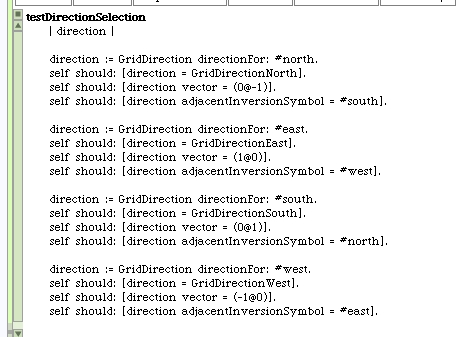
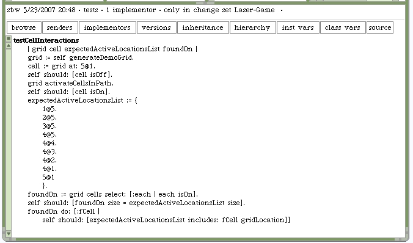
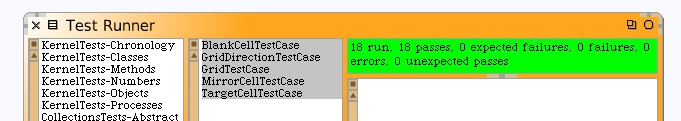

We need to fill-in some more unit tests. Functionality was added but no corresponding test. We're still using Unit Tests as a tool to maintain the validity of the implemented code, but we also allowed ourseleves to ignore the need to write the test case before we write in the model code. We did that in a few places.
Let's pick off an easy one by testing the new direction code. Here's the updated version of the #testDirectionSelection method for GridDirectionTestCase.
We could also enhance the grid testing so that all cells, after the laser beam is activated, have been inspected to be either on or off. For our test scenario, which should match this diagram, we should be able to check specific cells.

The locations for cells that should be on are...
- 1@5
- 2@5
- 3@5
- 4@5
- 4@4
- 4@3
- 4@2
- 4@1
- 5@1
Let's enhance our test to check these locations.
Rerun our unit tests.
Before resuming our tutorial, I want us to take a brief diversion into the review of a design idiom.